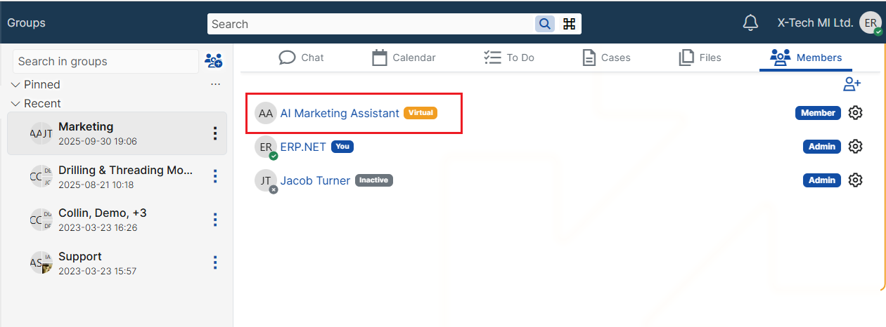

AI Arbiter
Overview
The AI Arbiter is an AI model that participates as a member in ERP.net chat groups.
It acts like a virtual colleague who can:
- answer questions inside a group conversation,
- clarify or check information (“who is right here?”),
- summarise long discussions,
- suggest next steps or rewrite texts.
The arbiter uses an AI Model and speaks through a Virtual User that appears as a normal chat participant.

Specialized AI Arbiters
ERP.net allows you to create multiple AI Arbiters, each fine-tuned for a specific domain or purpose.
This means you can have, for example:
- A Marketing Arbiter in marketing chats
- A Sales Arbiter in sales chats
- A Support Arbiter in support or customer-facing chats
Each AI Arbiter:
- Is backed by its own AI Model
- Has its own fine-tuning (System Message, Q&A, Training Conversations)
- Is represented by a dedicated Virtual User
- Can be added only to the chat groups where its expertise is relevant
Each arbiter will answer questions according to its specialization, rules, and training — even though they all use the same underlying AI provider (e.g. OpenAI).
For more information on how fine-tuning works, see:
https://docs.erp.net/tech/modules/work-management/ai/how-to/fine-tune-models.html
Configuring the AI Arbiter in a chat
- Open the desired chat group (e.g. Marketing, Sales, Support).
- Open the Members / participants list.
- Add the Virtual User linked to your arbiter model as a member of the group.
From this moment, the AI Arbiter is available in that chat.

Using the AI Arbiter
Inside any chat group where the Arbiter is a member, users can interact with it in the following ways:
Ask questions directly in the channel
- Example: “@Marketing AI, how often should we post on Instagram?”
Request a review of a message or thread
- Example: “AI, is this proposal consistent with our pricing rules?”
Ask for a summary
- Example: “AI, summarise today’s discussion and list next steps.”
The arbiter bases its answers on:
- the current conversation context in the chat,
- any fine-tuning (System Message, Q&A, Training Conversations) configured for its model - for more info, see How to - Fine-tune AI Models,
- the general knowledge of the underlying OpenAI model.
Training the Arbiter from real conversations (Train AI)
When the arbiter gives an answer that is not entirely correct or could be improved, you can:
- Correct or refine the answer in the chat (explain what is right).
- When you reach a good version, open the context menu on the AI’s message and choose Train AI.
- Select which messages from the conversation should be included.
- Confirm.
ERP.net will create a Training Conversation for the arbiter’s model.
After the next compilation (if used), the arbiter will use this new knowledge in future answers.
For more info and exact steps, see How to - Fine-tune AI Models
Prerequisites
To use an AI Arbiter, you need:
AI infrastructure configured
- AI Server site (infrastructure prerequisite).
- At least one AI Provider (OpenAI) with API key.
Virtual User
- One Virtual User (No login) that will represent this model in chats.
- Each Virtual User can be linked to only one AI model.
AI Model for the arbiter
- A record in
AI Models. - Usually with:
Build assistant = null
(so the model can be fine-tuned with Q&A and Training Conversations).
- Linked to an AI Provider (base model in OpenAI).
- Specified Virtual User - the one created in step 2.
- A record in
For more info on steps from 1 to 3, see How to - Setup AI
(Optional) Fine-tuning
- System Message for general behaviour and tone.
- Q&A entries (Model Q&As).
- Training Conversations (including those created via Train AI from chats).
(Optional, if fine-tuned) Model compilation
- Required if you use Q&A / Training Conversations or want a dedicated assistant configuration.
- See: AI Setup – Model compilation in the main docs.
For more info on steps from 4 to 5, see How to - Fine-tune AI Models
Notes and good practices
- Create separate arbiters for different domains (e.g., Marketing, Sales) if their knowledge and tone should differ.
- Keep the System Message short and focused (“You are a marketing assistant for ERP.net …”).
- Use Q&A for fixed rules and policies, and Training Conversations for real examples.
- Only add the arbiter to groups where it is actually useful, to avoid unnecessary noise.
The AI Arbiter turns your chat groups into smart, context-aware rooms where AI can actively support discussions instead of being a separate tool.